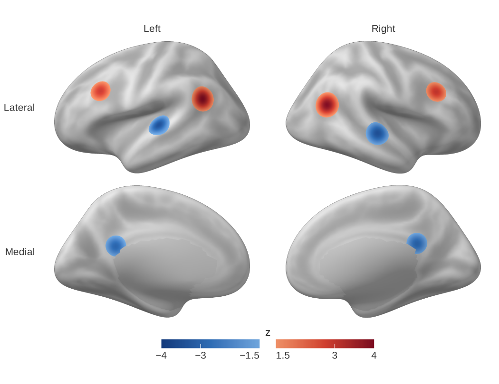
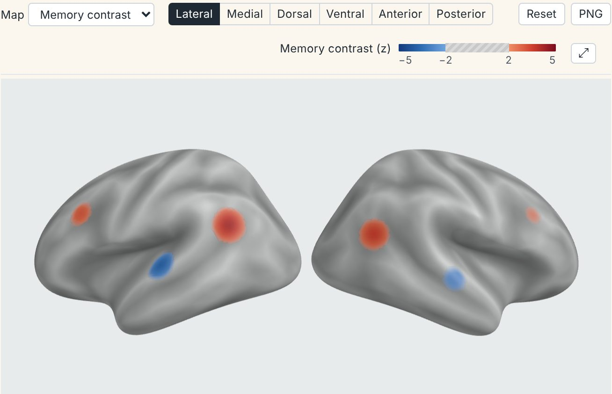

Cortical surface data in R: read meshes, keep values on their vertices, and turn them into publication figures and interactive reports.
neurosurf reads FreeSurfer, GIFTI and AFNI/SUMA surfaces, analyses data on the mesh (smoothing, geodesic distance, clusters, searchlights), and draws it. Static figures come from a deterministic CPU renderer that needs no OpenGL device or browser, so the same code gives the same pixels on a laptop, a cluster node or CI. Interactive reports bundle their own viewer and need no network access.
Documentation · Articles · Reference · News
Status: pre-release, not yet on CRAN. Interfaces may still change.
Installation
# Prebuilt binaries from r-universe
install.packages("neurosurf",
repos = c("https://bbuchsbaum.r-universe.dev", "https://cloud.r-project.org")
)
# Or the development version from GitHub (needs a C++ toolchain)
# install.packages("remotes")
remotes::install_github("bbuchsbaum/neurosurf")A publication figure in one call
The fsaverage5 template ships with the package: surfaces, sulcal depth for the grey anatomy, and a cortex mask that keeps colour off the medial wall. Given one value per vertex for each hemisphere, surface_figure() draws lateral and medial views of both with one shared colour scale.
library(neurosurf)
inflated <- load_fsaverage("fsaverage5", "inflated")Example data: a synthetic z map (any numeric vector with one value per vertex works)
white <- load_fsaverage("fsaverage5", "white")
# Smooth clusters placed at white-surface coordinates, falling off with
# distance over the inflated surface.
zmap <- function(hemi, side) {
cluster <- function(centre, z, width = 10) {
seed <- which.min(colSums((t(coords(white[[hemi]])) - centre)^2))
xyz <- coords(inflated[[hemi]])
z * exp(-colSums((t(xyz) - xyz[seed, ])^2) / (2 * width^2))
}
cluster(c(45 * side, -60, 20), 4) + cluster(c(40 * side, 20, 30), 3) +
cluster(c(55 * side, -20, 0), -3.5) + cluster(c(5 * side, -46, 22), -3)
}
z <- list(lh = zmap("lh", -1), rh = zmap("rh", 1))
fig <- surface_figure(
lh = inflated$lh, rh = inflated$rh, values = z,
anatomy = load_fsaverage_sulc("fsaverage5"),
cortex_mask = load_fsaverage_cortex("fsaverage5"),
threshold = 1.5, limits = c(-4, 4), legend_title = "z"
)
plot(fig)
write_surface_figure(fig, "figure.png") saves it. For a layout of your own, render single panels with render_surface_rgba() and arrange them, with the same colour key, using surface_panels().
An interactive report from the same values
scene <- surface_scene(
left = inflated$lh, right = inflated$rh,
layers = surface_layer(
"z", list(left = z$lh, right = z$rh),
colormap = surface_palette("two_sided", limits = c(-4, 4), threshold = 1.5),
limits = c(-4, 4), threshold = c(-1.5, 1.5), units = "z"
),
fallback = "Bilateral cortical surfaces with a thresholded z map.",
alt_text = "Inflated left and right hemispheres with red and blue clusters."
)
surfwidget(scene) # in R Markdown, Quarto or Shiny
write_surface_scene(scene, "report") # or as a standalone web page
A scene holds both hemispheres and any number of named maps; readers switch maps, views and reference regions from the toolbar. surface_palette() gives the viewer exactly the colours the static figure uses.
Which function do I need?
| You want | Use |
|---|---|
| A finished static figure: views × hemispheres, one colour key |
surface_figure(), write_surface_figure()
|
| One panel, or small multiples you lay out |
render_surface_rgba(), surface_panels()
|
| An interactive figure in a report, Shiny app or web page |
surface_scene(), surfwidget(), write_surface_scene()
|
| To rotate a surface in your R session |
view_surface(), plot()
|
| To read surfaces and data |
read_surf(), read_surf_geometry(), load_fsaverage()
|
| To map a volume onto the cortex |
vol_to_surf(), vol_to_surf_sdf()
|
| To analyse on the mesh |
smooth(), geodesic_distances(), cluster_threshold(), SurfaceSearchlight()
|
Volumetric data structures come from neuroim2.
Learn more
- Introduction to neurosurf data structures: geometry, vertex data and the core classes.
- Publication-quality surface figures: thresholds, colour keys, cortex masks and medial-wall policies.
- Bilateral interactive surface reports: scenes, several maps, reference regions and offline reports.
- Displaying surfaces with rgl: interactive exploration from an R session.
Contributing
Bug reports and pull requests are welcome on the issue tracker. See CONTRIBUTING.md, including how to rebuild the bundled JavaScript viewer. The Coverage badge reports whether the coverage workflow ran; its summary lists the measured coverage per file.